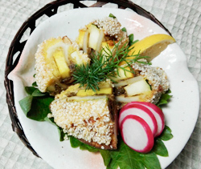

タケノコのあられ揚げ
- 調理時間：30分
- （一人当たり）
- カロリー：406kcal
- たんぱく質：7.8g
- 脂質：21.4g
- 炭水化物：45.1g
- 塩分：1.8g

＜2人分＞
- ゆでタケノコ
- 100g
- ズッキーニ
（各色お好みで） - 100g
- フキ味噌（市販品）
- 大さじ2～3
- 薄力粉
- 大さじ1
- 卵
- 1個
- しんびき粉
- 適量
- 揚げ油
- 適量
- ラディッシュ・レモン
（飾り用） - お好みで

- タケノコとズッキーニは5mm幅に切る。
- タケノコとズッキーニを合わせて、フキ味噌を間に挟み込む。
- ②に薄力粉を薄くまぶして、溶き卵にくぐらせ、しんびき粉をまぶしつける。
- 揚げ油で揚げる。お好みで、ラディッシュやレモンを添える。
タケノコのあられ揚げ
いつもの天ぷら衣やパン粉に他の材料を加えたり、または全く別の材料を衣に変えたものを「変わり衣」といいます。
天ぷら衣に青のりを加えた「磯部揚げ」が有名ですが、他にもアーモンドスライスや、ソバ米、そうめん、ゴマ、コーンフレーク、湯葉など、数えればキリがありませんが、今回のレシピは「新引粉（真挽粉・新挽粉・しんびき粉）」を使用しています。
新引粉は、もち米を蒸して乾燥させ、細かく砕いてから砂釜で煎ったものです。見た目が華やかなので、祝いの席にピッタリの一品に仕上がります。